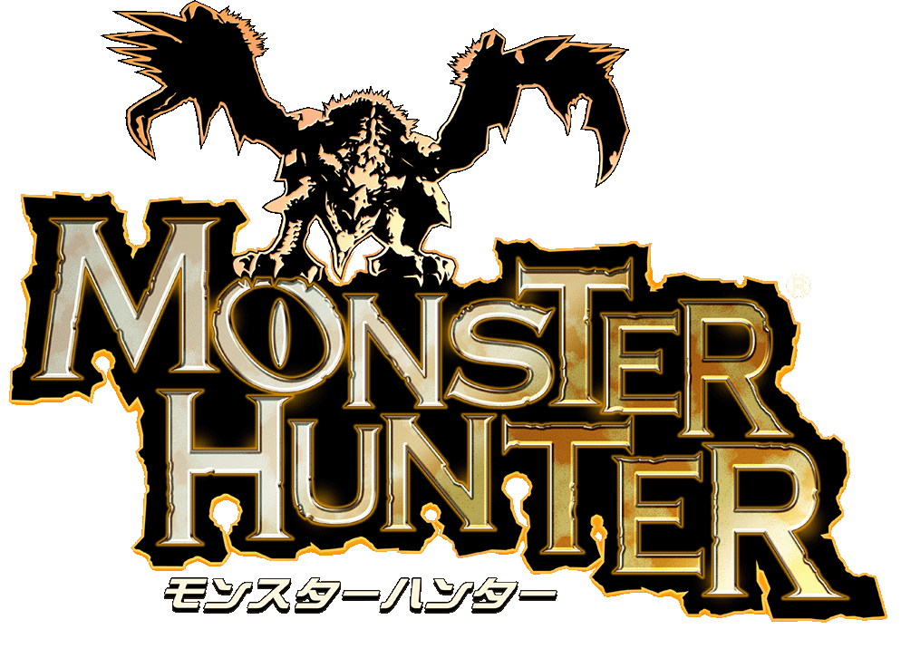
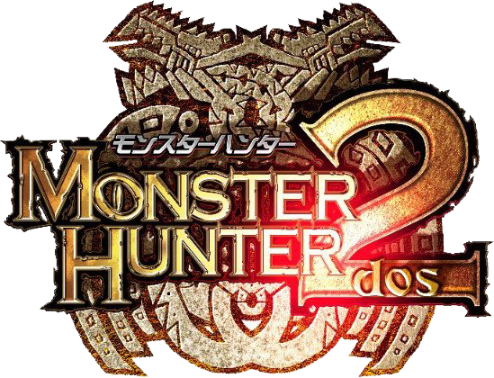
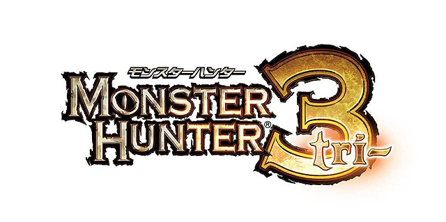
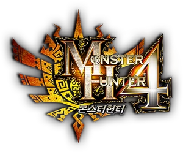

Monster Hunter: Caçada épica contra criaturas lendárias
Monster Hunter é uma franquia de RPG de ação onde o jogador assume o papel de um caçador, enfrentando monstros colossais em ambientes variados. Com foco em cooperação, preparo e mecânicas de crafting, se tornou um fenômeno global, com milhões de unidades vendidas e forte presença competitiva online.
🎮 Jogos da Série Monster Hunter
- 
- 
- 
- 


📅 Ordem Cronológica Canônica
🧬 Sinopse da História
Numa terra repleta de monstros colossais, caçadores treinam para enfrentar criaturas perigosas, coletar recursos e proteger vilarejos. A franquia combina estratégia, exploração e personalização de equipamentos para criar batalhas intensas e dinâmicas.